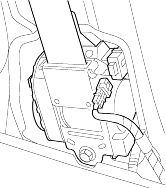
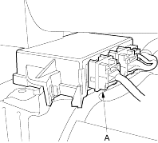
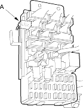

- Disconnect the TL1o and TR1o connectors.

- Disconnect the U1o connector (A) from the SRS unit.

- Reconnect the negative battery cable.
- Turn the ignition switch ON (II) and wait for 30 seconds. Then turn the ignition switch OFF.
- Check the No. 13 (10A) fuse in the under-dash fuse/relay box.
Is the fuse OK?
YES - Short to ground in the SRS unit; replace the SRS unit. 
NO - Go to step 15.
- Replace the No. 13 (10A) fuse in the under-dash fuse/relay box.
- Disconnect the F1o connector (A) from the under-dash fuse/relay box.

- Turn the ignition switch ON (II) and wait for 30 seconds. Then turn the ignition switch OFF.
- Check the No. 13 (10A) fuse in the under-dash fuse/relay box.
Is the fuse OK?
YES - Short to ground in the dashboard wire harness B; replace the dashboard wire harness B.
NO - Short to ground in the under-dash fuse/relay box No. 13 (10A) fuse line; replace the under-dash fuse/relay box or repair it.